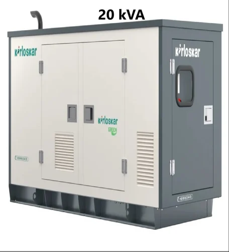
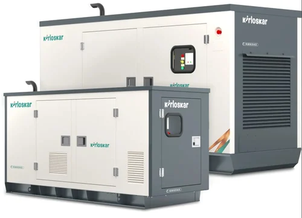

Our Products
Generators
 15 kVA (12 kW) Kirloskar generator is a highly reliable power solution ideal for small-to-medium commercial operations, farmhouses, and homes. Running on diesel, it features robust multi-cylinder engines, brushless self-regulated alternators, and delivers steady continuous power with a fuel efficiency of roughly 2.5 to 4 liters per hour depending on the load.
15 kVA (12 kW) Kirloskar generator is a highly reliable power solution ideal for small-to-medium commercial operations, farmhouses, and homes. Running on diesel, it features robust multi-cylinder engines, brushless self-regulated alternators, and delivers steady continuous power with a fuel efficiency of roughly 2.5 to 4 liters per hour depending on the load.

An industrial-grade, highly reliable power solution for medium-sized businesses, apartment buildings, and construction sites.

A highly reliable, heavy-duty power solution, ideal as a backup or primary power source for medium-sized businesses, clinics, apartments, and commercial operations.

Kirloskar silent generators are engineered to provide quiet, reliable, and eco-friendly power backup. Equipped with advanced acoustic enclosures, they typically operate below 75 dB(A), making them ideal for homes, businesses, hospitals, and noise-restricted urban areas.